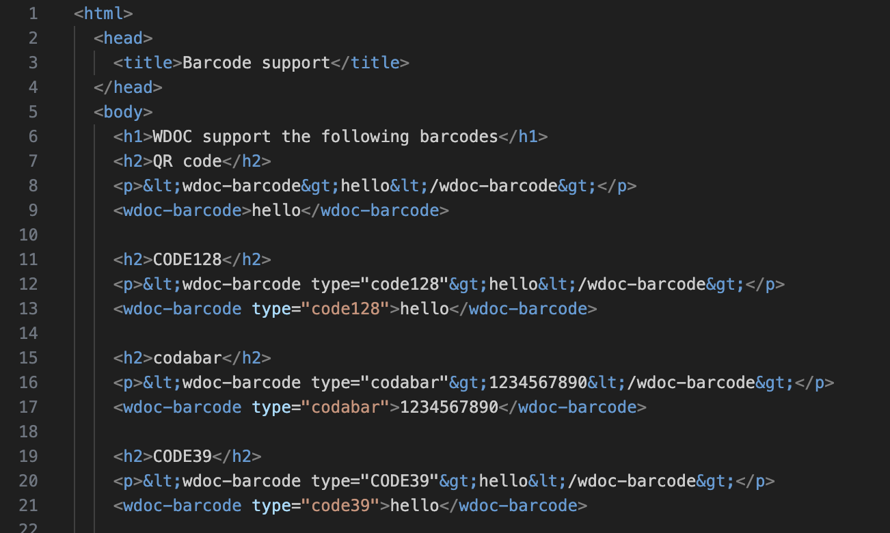
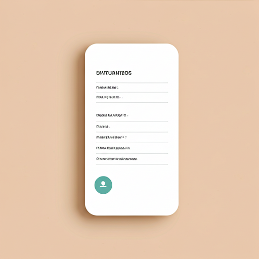
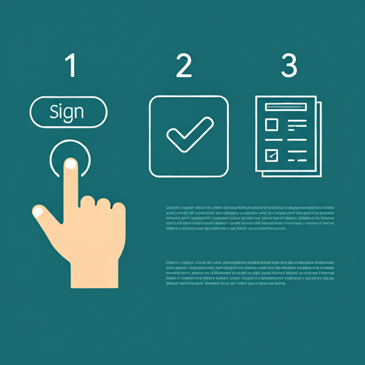
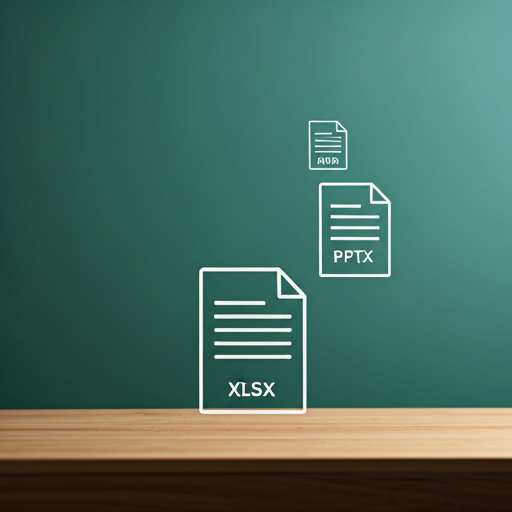

The Document Format, Reimagined.
Developer-friendly, interactive, and secure. The modern replacement for PDF.
Seamlessly Parsed by AI
The structured, non-binary nature of wdoc makes it incredibly easy for AI and scripts to read, understand, and extract data without complex parsing.


Forms that Work for You
Fill forms directly within the document. Answers are saved locally, and you can even embed critical attachments like ID cards or supporting documents.
Simple, Secure, Verifiable Signing
Utilize the built-in digital signature process, complete with email validation, to ensure every signature is secure and verifiable.


More Than Just a Document
wdoc acts as a container, holding related files like spreadsheets, presentations, or technical documentation, keeping all your project assets in one place.
Ready to Build with wdoc?
Take the next step and see how wdoc can revolutionize your document workflows. Dive into the documentation or download examples to get started.